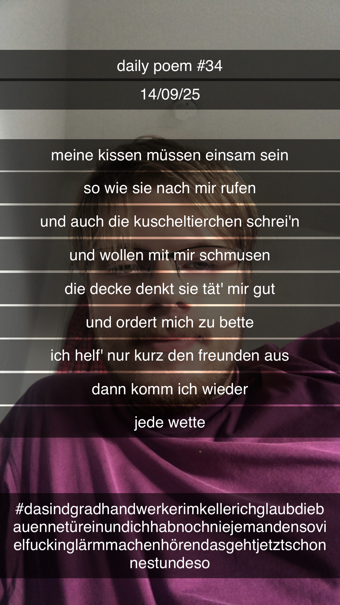

Meine Kissen müssen einsam sein
Meine Kissen müssen einsam sein,
So wie sie nach mir rufen –
Und auch die Kuscheltierchen schrei'n,
Und wollen mit mir schmusen;
Die Decke denkt, sie tät' mir gut
Und ordert mich zu Bette –
Ich helf' nur kurz den Freunden aus,
Dann komm' ich wieder – jede Wette.
